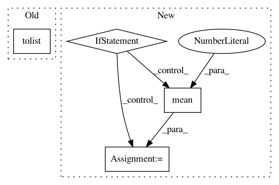

e3fcbb639e115e8afe9600bd06aee81acfda6704,reagent/training/world_model/seq2reward_trainer.py,Seq2RewardTrainer,train,#Seq2RewardTrainer#Any#,38
Before Change
loss.backward()
self.optimizer.step()
detached_loss = loss.cpu().detach().item()
q_values = (
self.get_Q(
training_batch,
training_batch.batch_size(),
self.params.multi_steps,
len(self.params.action_names),
)
.mean(0)
.tolist()
)
return (detached_loss, q_values)
def get_loss(self, training_batch: rlt.MemoryNetworkInput):
After Change
self.optimizer.step()
detached_loss = loss.cpu().detach().item()
if self.view_q_value:
q_values = (
get_Q(self.seq2reward_network, training_batch, self.all_permut)
.cpu()
.mean(0)
.tolist()
)
else:
q_values = [0] * len(self.params.action_names)
logger.info(f"Seq2Reward trainer output: {(detached_loss, q_values)}")
return (detached_loss, q_values)
def get_loss(self, training_batch: rlt.MemoryNetworkInput):
In pattern: SUPERPATTERN
Frequency: 3
Non-data size: 4
Instances
Project Name: facebookresearch/Horizon
Commit Name: e3fcbb639e115e8afe9600bd06aee81acfda6704
Time: 2020-10-13
Author: czxttkl@fb.com
File Name: reagent/training/world_model/seq2reward_trainer.py
Class Name: Seq2RewardTrainer
Method Name: train
Project Name: IndicoDataSolutions/finetune
Commit Name: e9eb9d3cdef98f21f754b577b88dc259a9914ede
Time: 2019-07-17
Author: matthew.bayer@indico.io
File Name: finetune/target_models/regressor.py
Class Name: Regressor
Method Name: predict
Project Name: IndicoDataSolutions/finetune
Commit Name: 9b2f98b435d6b21a0f5d49c1a5a23c97e7357d6f
Time: 2019-07-17
Author: matthew.bayer@indico.io
File Name: finetune/target_models/ordinal_regressor.py
Class Name: OrdinalRegressor
Method Name: predict